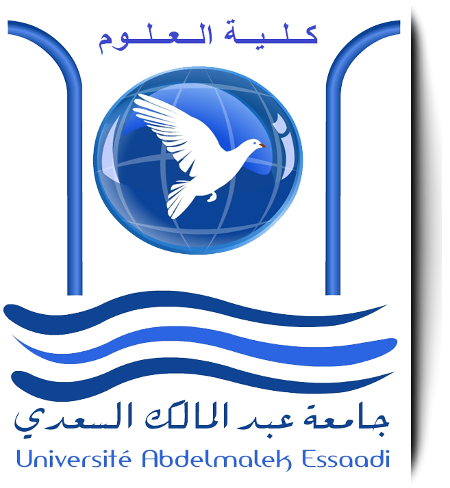

Présentation de l'Etablissement
La Faculté des Sciences Economiques, Sociales et de Gestion (appelée aussi U.F.R., Unité de Formation et de Recherche) est une des 8 Facultés de l'Université de Reims Champagne-Ardenne (avec celles de Droit et Science Politique, Lettres et Sciences Humaines, Sciences Exactes et Naturelles, Médecine, Pharmacie, Odontologie et Sciences et Techniques des Activités Physiques et Sportives).
Elle poursuit une double mission :
Pour cela, la Faculté propose de nombreuses filières de formations au sein desquelles les enseignants et chercheurs titulaires et des intervenants professionnels transmettent aux étudiants des savoirs et des méthodes en poursuivant quatre objectifs :
Elle poursuit une double mission :
- la formation de cadres spécialisés aptes à répondre aux besoins des organisations privées et publiques,
- le développement de recherches fondamentales et appliquées en sciences économiques, sciences sociales et sciences de gestion.
Pour cela, la Faculté propose de nombreuses filières de formations au sein desquelles les enseignants et chercheurs titulaires et des intervenants professionnels transmettent aux étudiants des savoirs et des méthodes en poursuivant quatre objectifs :
- l’acquisition de techniques, d’outils et de langages leur permettant de penser rationnellement et de communiquer clairement ;
- la formation d’une pensée critique leur permettant d’analyser et de réagir de manière autonome dans des situations nouvelles et évolutives ;
- l’aptitude à s’intégrer à des démarches collectives et à participer à la vie de la collectivité en tant que citoyen ;
- le développement de la personnalité de chacun en fonction de ses aptitudes et de ses désirs.